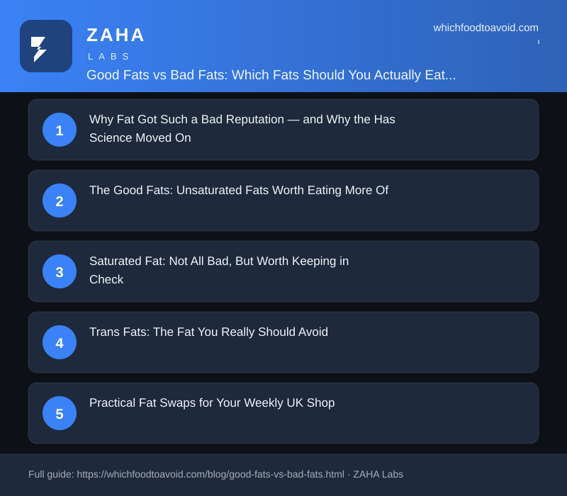

Good Fats vs Bad Fats: Which Fats Should You Actually Eat (and What to Avoid)

The High Cholesterol programme covers the same dietary levers this guide touches — saturated fats, fibre and plant sterols — in more depth.
View the High Cholesterol programme →
Also popular: Cholibrium, a heart-health supplement formula.
Affiliate link — if you buy through this link we may earn a commission at no extra cost to you. Always speak to your GP or a registered dietitian before starting any diet or supplement programme.
For decades, dietary fat was blamed for heart disease, obesity, and almost every chronic illness — yet the countries eating the most fat were often the healthiest. The truth is simple: good fats (unsaturated fats from olive oil, oily fish, and nuts) actively protect your heart, while trans fats and excess saturated fat are what NHS guidance recommends limiting.
Why Fat Got Such a Bad Reputation — and Why the Science Has Moved On
The low-fat craze of the 1980s and 1990s was built on research that later proved flawed. When food manufacturers stripped fat from products, they replaced it with sugar and refined carbohydrates — and rates of obesity and type 2 diabetes climbed rather than fell. Today, nutrition science is far clearer: fat is an essential macronutrient. It helps your body absorb fat-soluble vitamins A, D, E, and K, supports cell membrane function, and keeps hormones balanced. The question is not whether to eat fat, but which fat to choose.
The Good Fats: Unsaturated Fats Worth Eating More Of
Unsaturated fats divide into two types — monounsaturated and polyunsaturated — and both have a strong evidence base for supporting cardiovascular health.
Monounsaturated fats are found in:
- Extra virgin olive oil (look for Tesco Finest, M&S, or Filippo Berio brands at most UK supermarkets)
- Avocados and avocado oil
- Unsalted nuts such as almonds, cashews, and peanuts
- Rapeseed oil — the UK's most commonly grown edible oil and a budget-friendly everyday cooking alternative
Polyunsaturated fats, including omega-3 and omega-6 fatty acids, are found in:
- Oily fish: salmon, mackerel, sardines, and trout — NHS guidance recommends at least two portions of fish per week, one of which should be oily
- Walnuts and flaxseeds (linseeds)
- Sunflower oil and corn oil
- Omega-3 enriched spreads such as Anchor or Flora Omega-3
Omega-3 fatty acids in particular are associated with reduced inflammation, lower triglyceride levels, and a reduced risk of cardiovascular disease. Tinned oily fish — affordable at Aldi, Lidl, or any major supermarket — is one of the most cost-effective sources you can add to your weekly shop.
Saturated Fat: Not All Bad, But Worth Keeping in Check
Saturated fat has a more complicated story than the headlines suggest. It is found mainly in animal products and some plant oils, and while earlier research linked it firmly to raised LDL (“bad”) cholesterol, more recent reviews suggest the picture is nuanced. The type of food delivering the saturated fat appears to matter: full-fat dairy, for example, does not seem to carry the same risk as processed red meat.
NHS guidance recommends that saturated fat should make up no more than 10% of your daily energy intake — roughly 20g for women and 30g for men. Common UK sources include:
- Butter, lard, and ghee
- Cheddar and other hard cheeses
- Fatty cuts of beef, lamb, and pork; sausages and bacon
- Full-fat cream and ice cream
- Biscuits, cakes, and pastries made with palm oil or shortening
- Coconut oil — around 87g saturated fat per 100g, considerably higher than butter
This does not mean eliminating these foods entirely. A small amount of butter or a portion of full-fat cheese in an otherwise balanced diet is unlikely to cause harm. The focus should be on your overall dietary pattern rather than cutting out individual foods in a panic.
Trans Fats: The Fat You Really Should Avoid
If there is one type of fat genuinely worth cutting out, it is industrially produced trans fat, also listed on labels as “partially hydrogenated vegetable oil.” Trans fats raise LDL cholesterol, lower HDL (“good”) cholesterol, and drive systemic inflammation — a particularly harmful combination for heart health. The World Health Organization estimates industrial trans fats contribute to around 500,000 cardiovascular deaths per year globally.
The reassuring news for UK shoppers is that food manufacturers have largely removed artificial trans fats following regulatory pressure, and the UK Food Standards Agency monitors residual levels. However, they can still appear in:
- Some imported processed snacks and baked goods
- Cheap margarines — check the label for “hydrogenated vegetable oil”
- Fried fast food where oils are repeatedly heated at very high temperatures
Small amounts of naturally occurring trans fats exist in dairy and meat, but these behave differently in the body and are not associated with the same risks as their industrial counterparts.
Practical Fat Swaps for Your Weekly UK Shop
Healthier fat choices do not require an expensive overhaul. Here are simple, realistic swaps that fit a typical British shopping basket:
- Cooking oil: Replace cheap vegetable blends or lard with cold-pressed rapeseed oil (Borderfields and Mellow Yellow are widely stocked) for everyday frying, or extra virgin olive oil for lower-heat cooking and salad dressings.
- Spreads: Swap butter for an olive oil–based spread such as Bertolli, or try Flora ProActiv, which contains plant sterols clinically shown to help lower LDL cholesterol.
- Snacks: Replace crisps and biscuits with a small handful of mixed unsalted nuts — sold in own-brand bags at Sainsbury's, Asda, and Waitrose for around £2.
- Protein: Swap two red meat meals per week for oily fish. Tinned mackerel in tomato sauce or tinned salmon cost under £1 and deliver a solid omega-3 hit.
- Dressings: Choose olive oil and vinegar over creamy dressings made with partially hydrogenated fat.
How to Read Fat Labels in UK Supermarkets
UK food labels must display total fat, saturated fat, and often trans fat per 100g and per serving. The front-of-pack traffic light system makes quick comparisons straightforward:
- Green: low in fat (under 3g per 100g) or saturated fat (under 1.5g per 100g)
- Amber: medium levels — fine as part of a balanced diet
- Red: high levels — fine occasionally, but not suitable as a daily staple
Always check the actual grams per serving alongside the colour, as portion sizes printed on pack are sometimes smaller than what most people eat. NHS guidance suggests keeping daily saturated fat below 20g for women and 30g for men. If a product does not carry the traffic light system — common with smaller or imported brands — check the per-100g figures in the nutrition panel.
Frequently Asked Questions: Good Fats vs Bad Fats
Is butter bad for you?
Butter is high in saturated fat, but used sparingly as part of a balanced diet it is not categorically harmful. NHS guidance does not prohibit butter; it recommends keeping total saturated fat within daily limits (20g for women, 30g for men). If you spread it generously at every meal, swapping some for an olive oil–based alternative is a sensible step.
Is coconut oil a healthy fat?
Coconut oil contains around 87g of saturated fat per 100g — higher than butter. Some studies suggest its lauric acid content may have a neutral or marginally beneficial effect on HDL cholesterol, but the evidence is not strong enough to support the “superfood” label it has been given online. Both NHS and British Heart Foundation guidance currently advise using it sparingly rather than as an everyday cooking oil.
How much fat should I eat per day?
NHS guidelines suggest total fat should make up no more than 35% of your daily energy intake. For someone eating around 2,000 calories per day, that works out to roughly 70g of total fat, with saturated fat kept to no more than 20g (women) or 30g (men). There is no strict daily minimum for unsaturated fats, but including sources at most meals is broadly recommended for heart health.
Are low-fat products healthier than full-fat ones?
Not necessarily. Many low-fat yoghurts, ready meals, and snack bars compensate for removed fat by adding sugar, salt, or thickeners. Full-fat versions are often more satiating and can be the better nutritional choice overall. Always read the full nutrition label rather than assuming a “low fat” or “reduced fat” badge automatically makes a product healthier.